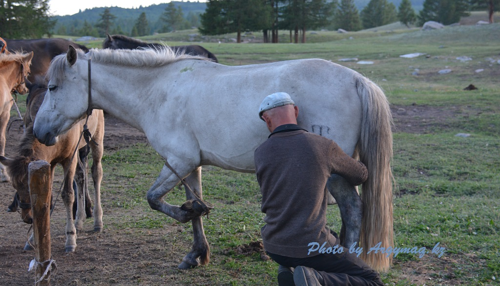
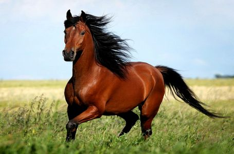

Жылқы
Жылқы адамзат өркениетіндегі, әсіресе, дала өркениетіндегі дамудың жарқын да елеулі көрсеткіштерінің бірі болады. Жылқыны қолға үйрете бастау көшпелі шаруашылық пен өркениет дамуының негізін қалады. Қолға үйретілген жылқының (E. caballus) шаруашылықта маңызы зор. Ол – ет және қымыз өндіру, салт міну, арбаға не шанаға жегу, әскери және спорттық бағыттарда өсіріледі.

Қазба қалдықтары жылқының б.з.б. 7000 ж. бұрын-ақ Азия мен Еуропада қолға үйретілгендігін дәлелдейді. Жылқы тұқымдасы есек, құлан, зебр, жабайы жылқы болып 4 туысқа бөлінеді. Үй жылқысы жабайы жылқыға жатады, одан басқа оған керқұлан (немесе Пржевальский жылқысы) және қазір жойылып кеткен Тарпаң жатады. Соңғысы 19 ғ. дейін Батыс Қазақстан, Батыс Сібір, Ресейдің еуропалық бөлігінің оңтүстік және оңтүстік-шығыс аймақтарын және кейбір Еуропа елдерін мекен еткен. Керқұлан үйірлері қазір Моңғолияда ғана кездеседі. Көптеген ғалымдардың зерттеулері бойынша үй жылқысының ең жақын тегі осы керқұлан. Жабайы жылқының сүйегі Францияның солтүстігінен көп табылған. Америкада жабайы жылқы болмаған, қолға үйретілген жықылар кейін тағыланып (мустанг деп аталады) кеткен.

Ежелгі дәуірлерде-ақ қазіргі Қазақстан аумағы жылқының қолға үйретілген мекені болғандығын археологиялық қазбалар дәлелдейді. Солтүстік Қазақстандағы Ботай мәдениеті энеолит дәуірінде (б.з.б. 4-3-мыңжылдық), Арқайым ескерткіштері орта қола дәуірінде (б.з.б. 2-мыңжылдық), Қазақстанның барлық аймақтарынан кездесетін арий, сақ, ғұн кезеңдерінің ескерткіштері (б.з.б. 1-мыңжылдық – б.з. 2 ғ.) ежелгі Қазақстанда жылқының қолға үйретіліп қана қоймай, бұл малдың ерекше қастерленіп, әдет-ғұрыптық рәсімдердің ажырамас бір бөлігіне айналғанын көрсетеді.